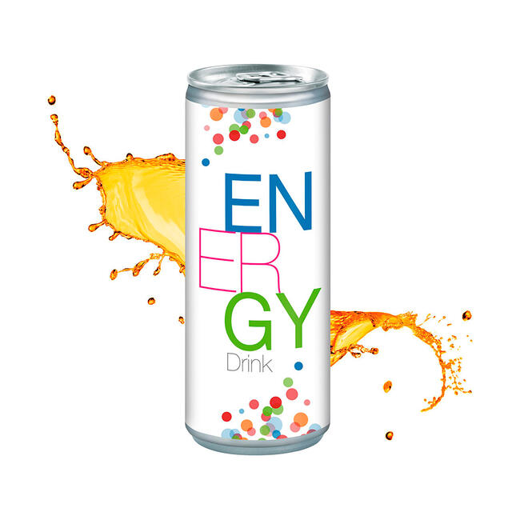

Recommended Menu from KWANGYA Cafe

aenergy drink
"aenergy" to fight with "Black Mamba"
- aenergy drink, any beverage that contains high levels of a stimulant ingredient, usually caffeine, as well as sugar and often supplements, such as vitamins or carnitine, and that is promoted as a product capable of enhancing mental alertness and physical performance. After you drink it, you are going to have "aenergy" to fight with "Black Mamba". As for what we can piece together about the mysterious antagonist, we know Black Mamba creates this disruption between the FLAT and the REAL WORLD. Black Mamba also seems to be targeting Karina and æ-Karina. It's time for you to help them!
Price: $50 KWD

MY's coffee
Create by yourself
- MY's coffee is a drink that you can create by yourself. If you are worried you will make a mess please don't worry! because “Naevis” will help you with the ingredients! “Naevis” seems to be a portmanteau of “navigation” and “ae“. The “Naevis” is an “ae” that can help open portals and lead the way.
Price: $80 KWD

YEPPIgurt
A happy virus drink
- YEPPIgurt (YEPPI yogurt) is a fermented slightly acid often flavored semisolid food made of milk and milk solids to which cultures of two bacteria (Lactobacillus bulgaricus and Streptococcus thermophilus) have been added. BUT!!! YEPPIgurt is not like the other yogurt. YEPPIgurt will give you happiness like you are a happy virus with a mysterious flavor that is hard to forget.
Price: $25 KWD